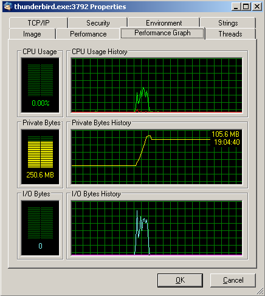
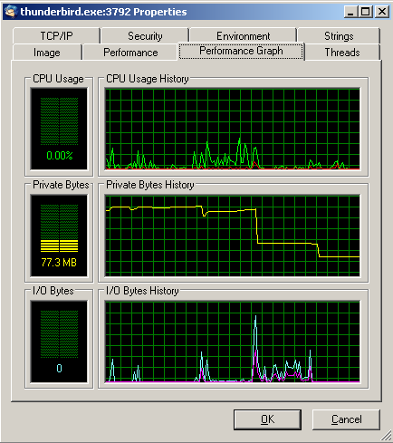
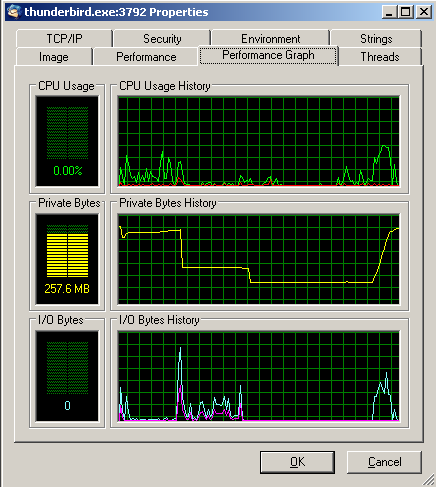

may 2007
Thunderbird Memory Usage
The 3 pictures below where taken between 5 and 10 minutes after starting TB !!

5 minutes after opening TB, the rise in the middle (from 105 to 250) is caused by the arrival of about 20 messages of 3k each.

Trying to read all mail (just by setting the read flag) indeed decreases memory usage

But here again 3 mails arrive (total size about 10kB), and they are read, but then suddenly (without incoming mail) the memory usage increases again.
And now the memory usage will increase gradually, and I've seen situations of over 400 MB !!